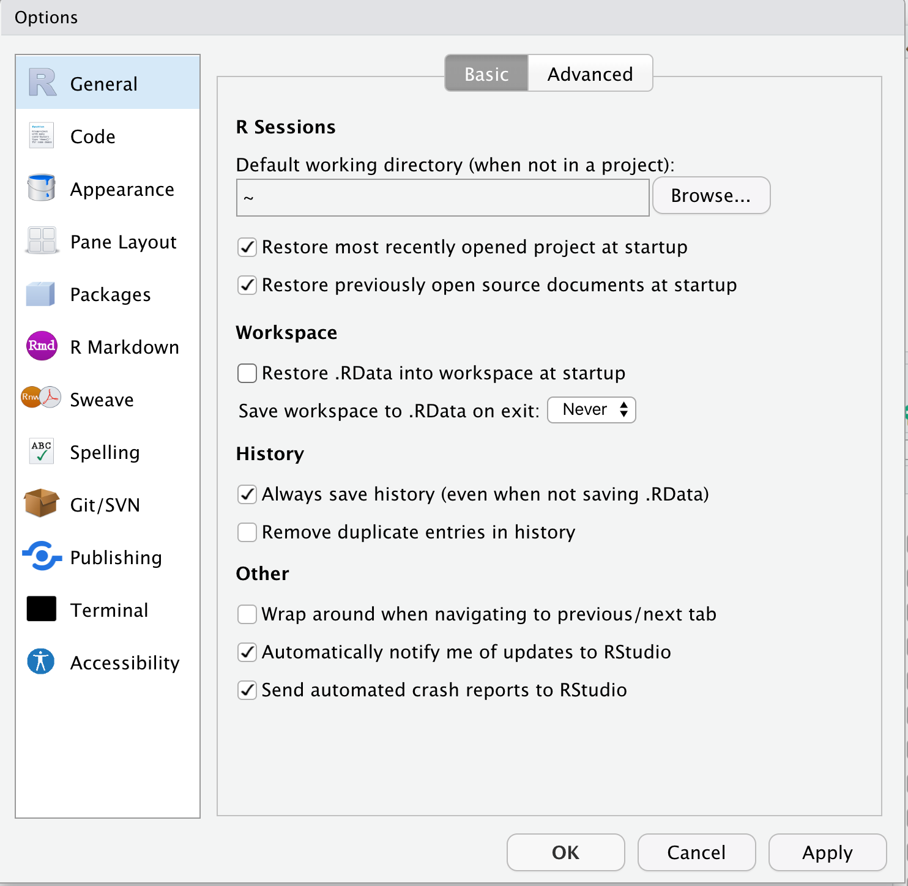
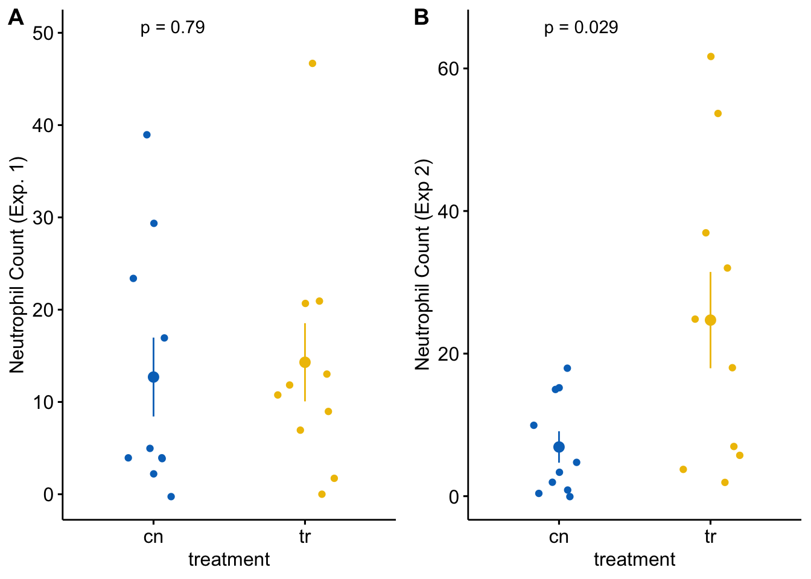

Chapter 1 Getting Started – R Projects and R Markdown
A typical statistical modeling project will consist of:
- importing data from Excel or text (.csv or .txt) files
- cleaning data
- initial exploratory plots
- analysis
- model checking
- generating plots
- generating tables
- writing text to describe the project, the methods, the analysis, and the interpretation of the results (plots and tables)
The best practice for reproducible research is to use as few software tools for these steps as possible. Too many research projects are not reproducible because the data were cleaned in Excel, and then different parts of the data were separately imported into a GUI statistics software for analysis, and then output from the statistics software was transcribed to Excel to make a table. And other parts of the analysis are used to create a plot in some plotting software. And then the tables and plots are pasted into Microsoft Word to create a report. Any change at any step in this process will require the researcher to remember all the downstream parts that are dependent on the change and to re-do an analysis, or a table, or a plot. Or a team member on the project making asks about how a particular variable was transformed and
R studio encourages best practices by creating a project folder that contains all project documents and implementing a version of markdown called R Markdown. An R Markdown document can explicitly link all parts of the workflow so that changes in earlier steps automatically flow into the later steps. At the completion of a project, a researcher can choose “run all” from the menu and the data are read, cleaned, analyzed, plotted, tabled, and put into a report with the text.
1.1 R vs R Studio
R is a programming language. It runs under the hood. You never see it. To use R, you need another piece of software that provides a user interface. The software we will use for this is R Studio. R Studio is a slick (very slick) graphical user interface (GUI) for developing R projects.
1.2 Download and install R and R studio
If you need help installing R and R studio, here is Andy Field’s Installing R and RStudio video tutorial)
1.3 Open R Studio and modify the workspace preference
- Open R Studio
- Click on R Studio > Preferences to
- Click on General in the left menu
- diable “Restore .RData into workspace at startup”
- Click on the “Save workspace to .RData on exit” popup menu and choose “Never”

What’s going on here? The workspace contains the values of all the objects created by the R code that you’ve run in the working R session. Nothing good comes from this. You want to start each R session with a clean slate, a blank workspace. This means that when you start a new R session, you will need to re-run all your code chunks to start where you left-off at the close of your last R session. This seems tedious but, be warned, bad things will happen if you save the workspace from the last session and re-load this at startup. Trust me. Just don’t do it.
1.4 If you didn’t modify the workspace preferences from the previous section, go back and do it
1.5 R Markdown in a nutshell
In this text, we will write code to analyze data using R Markdown. R markdown is a version of Markdown. Markdown is tool for creating a document containing text (like microsoft Word), images, tables, and code that can be output, or knitted, to the three modern output formats: html (web pages), pdf (reports and documents), and microsoft word (okay, this isn’t modern but it is widely used).
The R Markdown, or .Rmd, document contains three components: 1) a YAML header, which specifies formatting and styles for the knitted document, the code “chunks,” which are blocks of code that do something, and the space before and after the code chunks which contains text and any output images or tables from the code chunks.
1.6 Install R Markdown
Directions for installing R Markdown
R Markdown can output pdf files. The mechanism for this is to first create a LaTeX (“la-tek”) file. LaTeX is an amazing tool for creating professional pdf documents. You do not need PDF output for this text, but I encourage you to download and install the tinytex distribution, which was created especially for R Markdown in R Studio.
1.7 Importing Packages
The R scripts you write will include functions in packages that are not included in Base R. These packages need to be downloaded from an internet server to your computer. You only need to do this once (although you have to redo it each time you update R). But, each time you start a new R session, you will need to load a package using the library() function. Now is a good time to import packages that we will use
Open R Studio and choose the menu item “Tools” > “Install Packages.” In the “packages” input box, insert the names of packages to install the package. The names can be separated by spaces or commas, for example “data.table, emmeans, ggplot2.” Make sure that “install dependencies” is clicked before you click “Install.” Packages that we will use in this book are
- Import and wrangling packages
- devtools – we use this to install packages that are not on CRAN
- here – we use to read from and write to the correct folder
- janitor – we use the function clean_names from this package
- readxl – elegant importing from microsoft Excel spreadsheets
- data.table - improves functionality of data frames
- analysis packages
- emmeans – we use this to compute modeled means and contrasts
- nlme – we use this for gls models
- lme4 – we use this for linear mixed models
- lmerTest – we use this for inference with linear mixed models
- glmmTMB – we use this for generalized linear models
- MASS – we will use glm.nb from this package
- afex – we use this for classic ANOVA
- car – we use this for model checking and for classic ANOVA
- DHARMa – we use this for model checking generlaized linear models
- insight – we use this to learn about models
- graphing packages
- ggplot2 – we use this for plotting
- ggsci – we use this for the color palettes
- ggthemes – we use this for the colorblind palette
- ggpubr – we use this to make ggplots a bit easier
- ggforce – we use this for improved jitter plots
- dabestr – we use this to make several plot types
- cowplot – we use this to combine plots
Once these are installed, you don’t need to do this again although there will be additional packages that you might install. You simply need to use the library() function at the start of a markdown script.
1.8 Create an R Studio Project for this textbook
- Create a project folder within the Documents folder (Mac OS) or My Documents folder (Windows OS). All files associated with this book will reside inside this folder. The name of the project folder should be something meaningful, such as “Applied Biostatistics” or the name of your class (for students in my Applied Biostatistics class, this folder could be named “BIO_413”).
- Within the project folder, create new folders named
- “Rmd” – this is where your R markdown files are stored
- “R” – this is where additional R script files are stored
- “data” – this is where data that we download from public archives are stored
- “output” – this is where you will store fake data generated in this class
- “images” – this is where image files are stored
- Open R Studio and click the menu item File > New Project…
- Choose “Existing Directory” and navigate to your project folder
- Choose “Create Project”
- Check that a “.Rproj” file is in your project folder
- Download and move the file ggplot_the_model.R into the R folder.
Figure 1.1: Project folder with the .Rproj file and all main folders located at the first level of the project
The project directory should look like that in Figure 1.1. Importantly, the project file (“Applied Biostatistics.Rproj”) and the main folders are all located at the first level within the project folder.
Bug alert If your .Rproj file is somewhere else (on the desktop, in the data folder, etc.), bad things will happen.
1.9 Working on a project, in a nutshell
- Wake up, brush teeth, and open the project by double-clicking the .Rproj icon. Alternatively, open R Studio and then use the File > Open Project to open the project. The name of the project will at the top-right of the R Studio window. We always want to work within an open project and the first workflow guarantees this. If we Open R Studio and then open a .Rmd file, we could be working within another project or no project at all. Bad things will happen.
- Run previous code chunks, in order (top to bottom). Write new code in code chunks and run. When we run code, we add R objects to the workspace. The workspace contains the values of all the objects created by the R code that has been run in the working session. When I save the .Rmd file, these values are not saved, only the text and code chunks in the R Markdown document. This is a feature, not a bug.
- When we are finished with the session, quit R Studio. If you get a popup window asking if you want to save the workspace, click “No.” Then immediately go back to the section “Open R Studio and modify the workspace preference” above and follow the directions.
1.10 Create an R Markdown file for this Chapter
- The top-left icon in R Studio is a little plus sign within a green circle. Click this and choose “R Markdown” from the pull-down menu.
- Give the file a meaningful title like “Chapter 1 – Organization”
- Delete all text below the first code chunk, starting with the header “## R Markdown”
1.10.1 Modify the yaml header
Replace “output: html_document” in the yaml header with the following in order to creat a table of content (toc) on the left side of the page and to enable code folding
output:
html_document:
toc: true
toc_float: true
code_folding: hide1.10.2 Modify the “setup” chunk
The setup chunk should look something like this
knitr::opts_chunk$set(echo = TRUE)
# wrangling packages
library(here)
library(janitor)
library(readxl)
library(data.table)
# analysis packages
library(MASS) # negative binomial and some other functions
library(nlme) # gls and some lmm
# graphing packages
library(ggsci) # color palettes
library(ggpubr) # publication quality plots
library(ggthemes) # colorblind palette
library(ggforce) # better jitter
library(cowplot) # combine plots
# Okabe & Ito palette
pal_okabe_ito <- colorblind_pal()(8)[2:8] # ggthemes
# use here from the here package
here <- here::here
# load functions used by this text written by me
source(here("R/ggplot_the_model.R"))
# use clean_names from the janitor package
clean_names <- janitor::clean_names
data_folder <- "data"echo = TRUE tells knitr to display the code within a code chunk when the R markdown file is knitted. knitr::opts_chunk$set(echo = TRUE) sets echo = TRUE for all code chunks in the containing .Rmd file (not all R markdown files in the project!).
pal_okabe_ito <- colorblind_pal()(8)[2:8] assigns the Okabe-Ito colorblind palette to the object pal_okabe_ito. We use this to specify colorblind-safe colors when generating plots.
here <- here::here makes sure that here uses the function from the here package and not some other package. Huh? Let’s back up – R is an open source project and packages are written by independent programmers and scientists and not employees of some central company. When someone develops a package, they create functions that do stuff. Sometimes developers of different packages create functions that have the same name. There is a function name conflict if we load two packages with the same name. Our R session will use the function of the last loaded package as the function assigned to the name. If we want the name to be used with the function in the previously loaded package, then we need to either re-order the library() statements, or simply re-assign the name to the function that we want. This is what here <- here::here does. This script takes the function here from the package “here” and assigns it to the object “here!”
1.10.3 Create a “fake-data” chunk
- Let’s play around with an R Markdown file. Create a new chunk and label it “fake-data.” Insert the following R script and then click the chunk’s run button
set.seed(4)
n <- 10
fake_data <- data.table(
treatment = rep(c("cn", "tr"), each = n),
neutrophil_count_exp1 = rnegbin(n*2,
mu = rep(c(10, 15), each = n),
theta = 1),
neutrophil_count_exp2 = rnegbin(n*2,
mu = rep(c(10, 20), each = n),
theta = 1)
)
# View(fake_data)This chunk creates fake neutrophil counts in two different experiments. The comment (#) sign before View(fake_data) “comments out” the line of code, so it is not run. View the data by highlighting View(fake_data) and choosing “Run selected line(s)” from the Run menu.
1.10.4 Create a “plot” chunk
- Create a new chunk and label it “plot.” Insert the following R script and then click the chunk’s run button
gg_1 <- ggstripchart(data = fake_data,
x = "treatment",
y = "neutrophil_count_exp1",
color = "treatment",
palette = "jco",
add = "mean_se",
legend = "none") +
ylab("Neutrophil Count (Exp. 1)") +
stat_compare_means(method = "t.test",
label.y = 50,
label = "p.format") +
NULL
gg_2<- ggstripchart(data = fake_data,
x = "treatment",
y = "neutrophil_count_exp2",
color = "treatment",
palette = "jco",
add = "mean_se",
legend = "none") +
ylab("Neutrophil Count (Exp 2)") +
stat_compare_means(method = "t.test",
label.y = 65,
label = "p.format") +
NULL
plot_grid(gg_1, gg_2, labels = "AUTO")
Each plot shows the mean count for each group, the standard error of the mean count, and the p-value from a t-test. This statistical analysis and plot are typical of those found in experimental biology journals. This text will teach alterntatives that implement better practices.
1.10.5 Knit
- Knit to an html file
- If you’ve installed tinytex (or some other LaTeX distribution), knit to a pdf file
- Knit to a word document